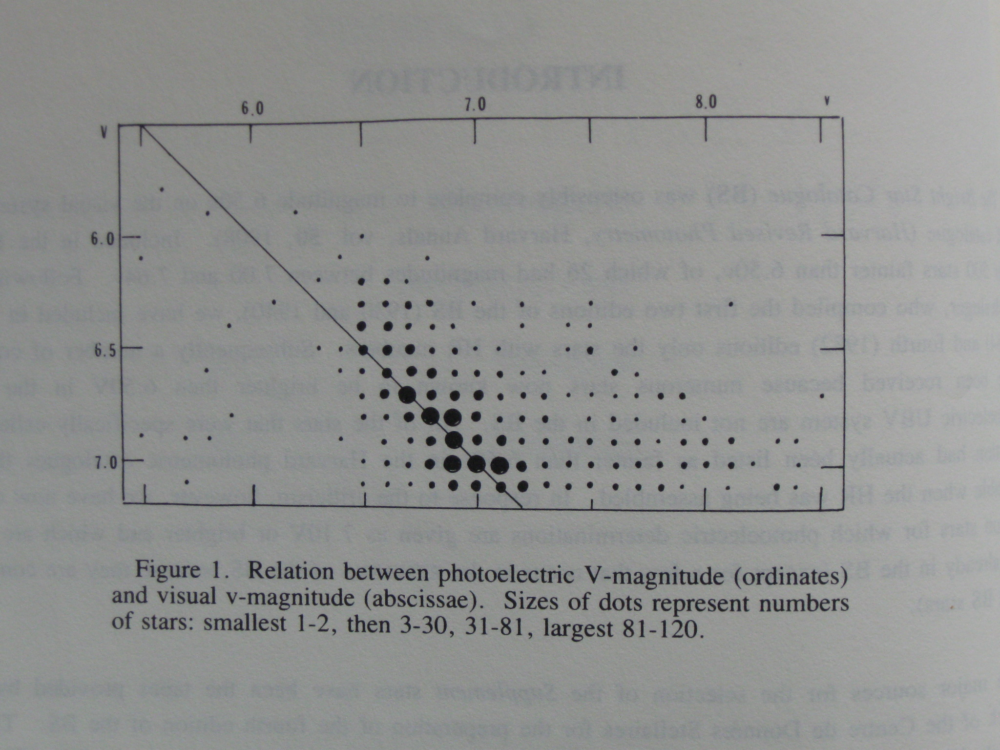

This project is about creating a custom star catalog out of existing star catalogs, using the Java programming language. It grew out of a desire to create a replacement for the Yale Bright Star Catalog, revision 5 (1991).
The main result of this project is a bright star catalog having these characteristics:
There is a related project defining stick figures for constellations, as an aid to creating star charts.
-Dproject-root=C:\blah\star-catalog
You also need to download the catalog files from VizieR. They aren't included in this project. For details, see the catalogs/input directory. Each catalog has a SOURCE.utf8 file with a link to the VizieR catalog, and the name of the missing file that you need to download.
From the SIMBAD docs: "Simbad is not a catalogue, and should not be used as a catalogue. The CDS also provides the VizieR database which contains published lists of objects, as well as most very large surveys. The idea now is to use both Simbad and VizieR as complementary research tools." (It seems like this advice is not strictly followed by many people.)
"It is to be noted that for a double system in which the components can be observed separately, Simbad frequently includes three entries: A and B components, and an additional entry for the joint system (AB), the latter entry carrying the observational data and references related to the system as a whole."
So the Hipparcos catalog lists the magnitude in both its native bandpasses Hp, Bt and Vt, but it also uses a derived, calculated Vmag field, converted to the Johnson V magnitude. Vmag is to 2 decimal places, while Hp is to 4 decimal places. The values for the native bandpasses are much more precise. Casual users of the catalog can be completely unaware of the significant decrease in precision for such calculated fields.
Useful to note: "It is usually the colours of an object that are of astrophysical interest rather than the observed magnitudes themselves (ref)."
Double/multiple stars also have an issue with the cutoff. If you intend to amalgamate close doubles, then there is cross-talk with the filtering by magnitude. The magnitude of each component in the system can be below the brightness limit, but the combined brightness may be above the limit. There is a formula for adding the magnitudes of two close stars.
Variable stars also have magnitude cutoff issues. For variable stars, you need to know its magnitude at maximum brightness in order to filter correctly with respect to a given magnitude limit. Take for example the long-period variable Mira. In Hipparcos, Mira's Vmag is stated as 6.47 (near the middle of its range). But at its peak, Mira's magnitude is around 3.4. So if you filter Hipparcos' hip_main.dat file using Vmag < 6.0, the result will not include Mira.
When a system is treated as being a single entry, then the issue arises of how to characterise the brightness. There is a formula for computing the magnitude of a double star from the magnitude of its components.
The radial velocity should be explicitly attached to either a component of the system, or to its barycenter, otherwise you don't know what the radial velocity refers to.
When you try to link one catalog to another, it's extremely likely that the join will not match 100% of the time. When you join catalog A to catalog B via a common identifier, then a non-nullable field in B usually becomes a nullable field in the result.
Strictly speaking, an identifier maps to a record in a catalog, not to a star as such. Because of the multiplicity issue, different catalogs can have different viewpoints on which part (or parts) of a multiple system to include in a record.
One method of doing this might be to define a conventional ordered string of text, that matches the order of fields in the catalog. The text would use codes that identify the provenance of each field, in sequence. (This technique is used in this project.)
The 5th edition was never published in book form. Here are some quotes from the printed 4th edition (1982):
"The ostensible visual magnitude limit of the HR catalogue was 6.50, and it contains 9110 objects. Even in 1908, but especially by modern standards, that magnitude limit is hazy at best. It included 695 HR stars with magnitudes fainter than 6.5V on the UBV photometric system; whereas over 200 stars of magnitude 6.00-6.50V in the modern compilations...are not included in the HR."
The mapping between Harvard Revised Photometry (HR) v and Johnson V magnitudes is shown graphically in the supplement to the 4th edition:

"Inevitably many gaps still remain in the tabulated materials.... Despite the vast accumulation of new data it is perhaps astonishing, and somewhat depressing, to note the large numbers of omissions of photoelectric magnitudes and colors, MK spectral classes, and radial velocities among the stars that have been known the longest and are presumably the easiest to observe."
"Since the third edition was published, based on the literature through 1962, it is estimated that well over 200,000 astronomical papers have been listed in the Jahresbericht and its successor, the Astronomy and Astrophysics Abstracts.... Probably well over a third of these references deal in one way or another with stars. The titles and abstracts for the years 1961 through 1979 were scanned for potentially useful data both for the REMARKS and for filling gaps in the tabulated data. Very few of the titles or abstracts, however, indicate whether or not any bright stars are involved. Hence many an interesting item may have been overlooked."
"Considering the immense amount of material scanned in the preparation of this catalogue, both further overlooked errors in other sources as well as new errors incurred by our own human fallibility will inevitably, despite all precautions, have introduced many as yet undiscovered errors into this volume. We ask the users' indulgence and will welcome unambiguous corrections."
These remarks reflect the manual way in which this catalog was traditionally maintained.
Summary of Completeness of Data (4th edition, 1982):
| Item | 3rd ed. | 4th ed. |
|---|---|---|
| Photoelectric magnitudes | 50% | 95% |
| B-V Colors | 50% | 94% |
| MK Spectral Classes | 75% | 93% |
| Parallaxes | 30% | 31% |
| Radial Velocities | 75% | 93% |
Remarks from the Supplement to revision 4:
"REMARKS are given for 49% of the stars. For a high percentage of these, various data in the literature have been found to be discordant."
"In Figures 2 - 4 the color indices (B-V), (U-B), and (R-I) are compared with the major spectral classes. The considerable dispersions reflect possible errors in spectral classification, in the colors, and color excesses, as well as differences in luminosity classes..."
In summary, given the above issues, it seems desirable to generate a replacement for the Yale BSC, using more modern sources of data.
There are a number of catalogs related to the Hipparcos mission:
Hipparcos doesn't include radial velocity data, but the Hipparcos Input Catalog does.
Main documentation:
Hipparcos-2 has 117955 records (VizieR), 263 fewer than the original Hipparcos data.
"What took more than 6 months some 12 years ago, takes currently about a week on a single desktop computer..."
This catalog has good precision, but is missing 14% of the bright stars.
Pulkovo is missing 1,183 of the bright stars found in Hipparcos (about 14%). If supplemented with Barbier-Brossat/Figon (2000) instead of BSC, the remainder is missing only 16 stars.
Radial velocity precision for brighter objects ~0.2-0.3 km/s.
Gaia has no Johnson Vmag field.
Its Early Data Release 3 (EDR3) has 150 bright stars with G < 3.00.
BSC Supplement 267 V BSC 8,404 V HD 8,524 Photovisual TYC 8,851 Vmag HIP 8,874 Vmag HIC 3,559 Vmag Gaia EDR3 12,119 GmagI don't know the reason why Gaia's value is so high.
For this project, the number of records is 5112, with magnitude <= 6.0.
As above, but this time the number of records with magnitude < 3.0 (again using VizieR):
BSC Supplement 0 V BSC 170 V HD 147 Photovisual TYC 166 Vmag HIP 172 Vmag HIC 169 Vmag Gaia EDR3 150 Gmag
The docs for Gaia state that there's poor support for bright stars, but the above table contradicts that statement. It only seems to be missing only about 20 stars.
For this project, the number of records is 173 with magnitude < 3.0. (This is 1 greater than the HIP result stated above because of HIP's Vmag for Omicron Ceti.)
Having 3 pieces of data for position and 3 for velocity means that the full 3D motion is specified (full kinematics).
Other data of interest: